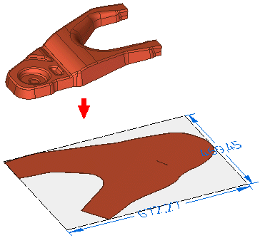

Blank Body command
Use the Blank Body command to create a flattened body from selected model faces of an ordered or synchronous part or sheet metal model.

Use the Blank Body command to create a flattened body from selected model faces of an ordered or synchronous part or sheet metal model.
